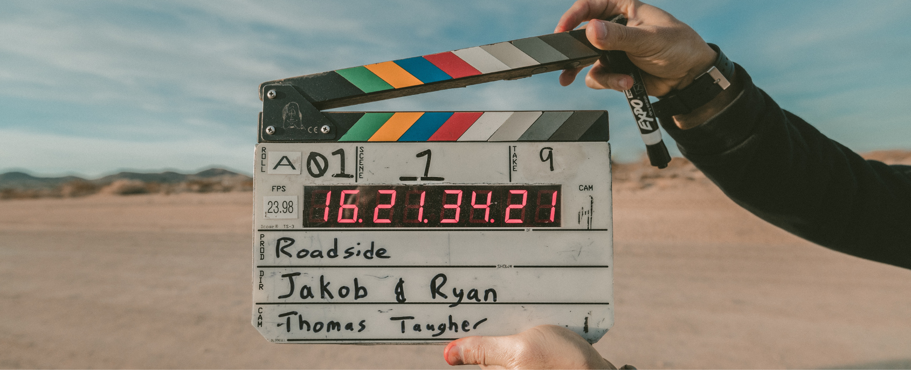

Tips for VCE Media
Image: Someone holding a clapperboard
-
Know the terminology
In Media, it is very important to know the terminology/language because if you don’t answer questions in your SACS/exams with the right word, or it's misspelled you will lose marks. -
Practice writing skills
There will be a lot of writing in Media from extended responses to short answer questions. It is very common for examiners to mark you down for misspelled words that aren’t terminology or for using wrong grammar, structure, and tone. Your work must be grammatically correct with the use of commas, capital letters, full stops, etc. The structure of answering questions in Media must always follow the TEEL structure which stands for topic sentence, evidence, explain, and link. Lastly, the tone of answering the questions must always be in formal language which means no first-person pronouns, no abbreviations, no cliches, etc. -
Task words
Task words are also important for most subjects other than English however they all are different and mean different things in different classes. In Legal Studies, they are:- Analyse: examine the main features and how they relate.
- Explain: define, identify the features, and provide an example.
- Define: state the meaning of a phrase or word.
- Describe: a detailed account of the facts in sequential order.
- Discuss: in response to provided information examine both sides of the issue.
- Distinguish: show the points of difference.
- Evaluate: examine the strengths and weaknesses and provide your opinion.
- Identify: establish information, key characteristics, or features.
- Illustrate: provide an example that supports a statement.
- Outline/list: a brief description.
- Justify: provide valid reasons or evidence to support a statement.
-
Practice questions
Practice questions are one of the best ways to study for media because it is a lot of application knowledge that you can’t learn without practising questions. Most teachers will provide you with practice questions before a SAC/exam which helps you to identify what the test will most likely be covering. -
Study Design
One of the most important things you can do in any subject you are studying is to look through the study design. They are literally giving you the main knowledge you will need to succeed in the subject as well as how you will be assessed.